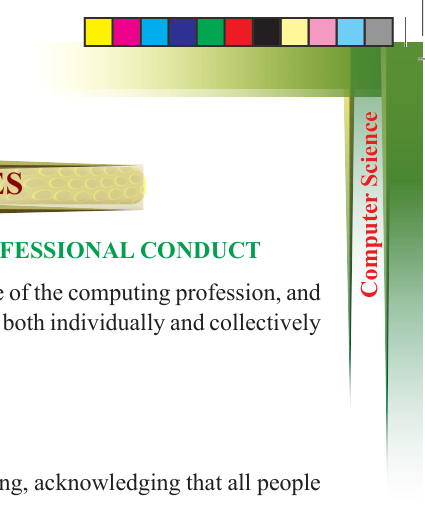

267
Student’s Book Form Two
APPENDICES
APPENDIX A: CODE OF ETHICS AND PROFESSIONAL CONDUCT
The ACM Code of Ethics expresses the conscience of the computing profession, and
it affirms an obligation of computing professionals both individually and collectively
to use their skills for the benefit of society.
1. GENERAL ETHICAL PRINCIPLES
A computing professional should...
1.1
Contribute to society and to human well-being, acknowledging that all people
are stakeholders in computing.
1.2
Avoid harm.
1.3
Be honest and trustworthy.
1.4
Be fair and take action not to discriminate.
1.5
Respect the work required to produce new ideas, inventions, creative works,
and computing artifacts.
1.6
Respect privacy.
1.7
Honor confidentiality.
2. PROFESSIONAL RESPONSIBILITIES
A computing professional should...
2.1
Strive to achieve high quality in both the processes and products of professional
work.
2.2
Maintain high standards of professional competence, conduct, and ethical
practice.
2.3
Know and respect existing rules pertaining to professional work.
2.4
Accept and provide appropriate professional review.
2.5
Give comprehensive and thorough evaluations of computer systems and their
impacts including analysis of possible risks.
2.6 Perform work only in areas of competence.
2.7
Foster public awareness and understanding of computing, related technologies,
and their consequences.
2.8
Access computing and communication resources only when authorised or when
compelled by the public good.
2.9
Design and implement systems that are robustly and usably secure.